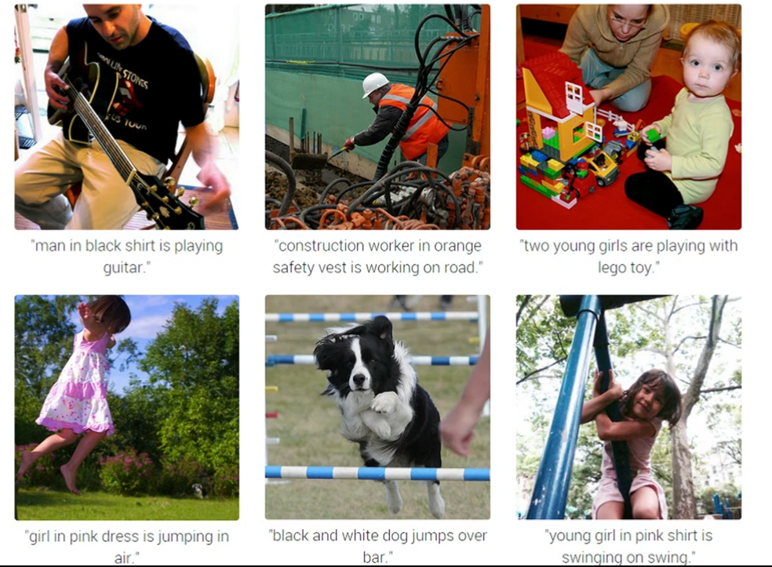

- Ask!
- Slides & code are available at on GitHub
Marketing in a world of co-veillence
Marketing lecture 10 March 2015
Bob Rietveld
Notes
About Me / Oxyme
2002 Consultancy
2005 PhD (VU)
2007 Oxyme
2015 Good Marketing
Age: 36 years
Passion: Science
Sport: Sailing & Running
Drink: G&T
About Oxyme
What is Google?
- A search engine
- A ad platform
- Big Brother
- Something different altogether
It's not a search engine.
It's not an ad platform
Outline for Today
The objective
Part 1
From data to insights: practice
- The question
- Applications
- Data
- Methodology
- Visual analysis : An live experiment
Part 2
From data to insights: science
- Transactional data : Private traits and attributes are predictable from digital records of human behavior
- Expressed data : Mining Marketing Meaning from Online Chatter: Strategic Brand Analysis of Big Data Using Latent Dirichlet Allocation.
My objective for today
Start with the guess
Richard Feynman
Ockam's Razor
"Among competing hypotheses that predict equally well, the one with the fewest assumptions should be selected."
William of Ockham (c. 1287–1347)
| Paper | Data | Method | Insight | Source |
|---|---|---|---|---|
| Pioneering advantage: Marketing logic or marketing legend (1993) | Hard copies of Business week, Advertising Age of 50 product categories + PIMS database. | Historical Analysis | Being first to market does not result in long term advantages for the pioneer. | paper |
| Managing the Future: Ceo attention and innovation outcomes. (2007) | Letters to shareholders + Wayback Machine | Hazard Model | Frequency of the word will, predicts the time to adoption of an innovation (e-banking). | paper |
| The Future of Prediction: How Google Searches Foreshadow Housing Prices and Sales. (2012) | Google search frequencies + San Francisco Real estate data | Seasonal autoregressive (AR) model | Search terms are correlated with future sales and prices in the housing market. | paper |
On data and exponential growth
The goldilocks conditions data
- Data availability (two reasons).
- Exponential increase in cheap, easy to deploy, distributed computing power & storage.
- Productivity tools.
We are wired to share
"Humans so willingly self-disclose because doing so represents an event with intrinsic value, in the same way as with primary rewards such as food and sex."


Applications: what to do with this data?

Consumer Health
Law
Literature
Novel written by an algorithm in 72 hours. (2008) Link
Finance / InvestMent
Business plan evaluation
Healtcare
PR
Let's try NYT Link
Applications in Marketing
Upstream
- Product Innovation (incremental)
- Ideation
DownStream
- Campaign evaluation
- Communication
- Brand Health
In Summary on data
The Good
- It's there and it's growing.
- The econometrics best friend : TIMESTAMP
Agent based data
The Bad
- Data ownership / authorship
- Single source (Gnip, Twitter)

Prof. Sandy Pentland link
Two problems
- Do I have the right data ? (Define inclusion criteria)
- How well is my classification model (topics,sentiment,mortality etc) performing?
Methodology challenges
- Training or no Training
- Dimsensionality Reduction
- Dimensionality Interpretation
- Validation
On modelling
"Essentially, all models are wrong, but some are useful."
George Box
How to analyse?
Deinstall Excel, it's the devil's instrument
Go back to the question
Ockam's Razor
Assess your data needs
Select appropriate methodology based on properties of the data
Run the code
Make your research reproducible (R,Python,Julia,Go,Java,Ruby,Matlab...something)
What we did, analysing sentiment
- Go for data quality, not quantity
- Use human interpretation
- Use established sampling methodologies
- Check quality, rinse and repeat
The start of machine learning
- 1960: Teach the computer how to play by encoding the rules.
- 2015: The computer learns what rules are by itself.

Modelling and data
"The data is the model. The worst algorithm beats the best algorithm when the size of the dataset is dramatically increased."
Peter Norvig Director of Research @ Google paper

Data is the (business) model

How good is are the (deep learning) algorithms?
Google putting youtube data to work.
Reverse engineer Google images


Algorithms
- Google uses 57 parameters to determine what search results to display
- Facebook experiments emotional contagoin paper
Deployment
- Amazon is on record as making changes to production every 11.6 seconds on average in May of 2011.
- Facebook releases to production twice a day.
Decoupling of application and understanding

Tim Salimans Ph.D. candidate in econometrics at Erasmus University Rotterdam in the Netherlands.
A demonstration of decoupling
Two examples
- How to train the model
- Assessing the quality
- What to do with the outcome
MetaMind.io Api

In Summary on Methodology
- More data = better outcome
- Algortihms are getting better fast
- Decoupling of algorithm writers and users
- Beware of the filter bubble
- Where will it end....?
How can the net amount of entropy of the universe be massively decreased?
Isaac Asimov: The Last Question Link
Break: 5 min
What can be predicted from your likes?
Private traits and attributes are predictable from digital records of human behaviour.
Michal Kosinskia,1, David Stillwella, and Thore Graepelb

You are what you like?
Dependent variables
- Sexe
- Political orientation
- Sexual orientation
- Ethnicity
- Personality Traits
The Big Five model of personality
Data
- My personality project (app on Facebook)
- 52K Personality surveys
- 1.3K Intelligence surveys
- 2.3K Satisfaction with Life surveys
- 58K Facebook profiles (gender ,political view,religion)
Methodology
Insights
Accuracy of the model
Predictors
Who dares....
Make sense of all this data about your brand
Mining Marketing Meaning from Online Chatter: Strategic Brand Analysis of Big Data Using Latent Dirichlet Allocation
SESHADRI TIRUNILLAI and GERARD J. TELLIS

Data
How did they search (inclusion criteria, e.g. Micheal Dell) ?
350K product review ratings in 5 categories

Methodology
Unsupervised learning
Interpretable dimensions
Context specific word us (polysemy)
Provides data on dimension reduction
Validity
Human raters [0.6 interrated reliability]
Consumer Reports
Hetrogeneity (Herfindahl index)
Split sample tests (why such a high level of aggregation).
Application
Brand Mapping (Create a similarity measure based on the top word distributions across brand within a market).
Dynamic Brand Evaluation
An example Link
Limitations
Focus on perceived quality. what about the other drivers (social, marketing induced, transactional, service)
Assertion is that consumer focus on the most important dimensions if quality. != True
Dimension selection & Labeling dimensions
Words convey partial information.
Attribution (is about you, the competition, retailer, service organisation)?
LDA over time is difficult, dimensions are context specific and will shift.
What is the advantage?
Ockam's razor
- The paper is really about product analysis aggregated to a brand level.
- 0.6 overlap in human raters
- 0.61 to 0.81 overlap with consumer reports
Closing statements
On data and applications
- The era of coveillence (sharing & tracking) is here.
- Data and algoritms will make, predictability data property
- We have some interesting issues (filter bubble, ownership) ahead
On the papers
- Social data is a predictor of offline phenomenon
- Methodologies need careful evaluation and attention, think of Ockam's Razor
- The world is your oyster; if you are an econometrist
Final Thoughts
How far will we share, when are we going to stop sharing, and how far are we going to allow ourselves to monitor and surveil each other in kind of a coveillance?
Kevin Kelly
What is Google?
Kevin meets Larry Page in 2002
"Larry, I still don't get it. There are so many search companies. Web search, for free? Where does that get you?” My unimaginative blindness is solid evidence that predicting is hard, especially about the future, but in my defense this was before Google had ramped up its ad-auction scheme to generate real income, long before YouTube or any other major acquisitions. I was not the only avid user of its search site who thought it would not last long. But Page's reply has always stuck with me:"